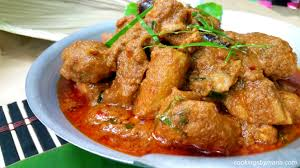

Rendang Ayam
Ayam kampung juga enak dibuat rendang. Masak perlahan hingga bumbu mengental dan daging ayam empuk. Bisa dibuat setengah basah atau kering.
Bahan
- 1 kg ayam kampung, potong 8-12 bagian
- 500 ml santan kental
- 1 batang serai, memarkan
- 2 lembar daun jeruk purut
- 1 lembar daun kunyit
- 2 cm lengkuas, memarkan
- 3 sdm air asam dari 50 gr asam Jawa
- 5 butir kemiri
- 50 gr cabe merah keriting
- 10 butir bawang merah
- 6 siung bawang putih
- 2 cm jahe
- 2 cm kunyit
- 1 sdt ketumbar
- 1/2 butir pala
- 1/2 sdt jinten
- 2 sdt garam
Cara Membuat
- Cuci potongan ayam hingga bersih lalu tiriskan.
- Rebus bumbu halus, lengkuas, serai, daun jeruk, daun kunyit, air asam dan santan sampai mendidih.
- Masukkan potongan ayam kampung, aduk-aduk sesekali agar santan tidak pecah.
- Masak dengan api kecil hingga daging ayam empuk dan santan agak kering.
- Angkat, sajikan hangat.
|